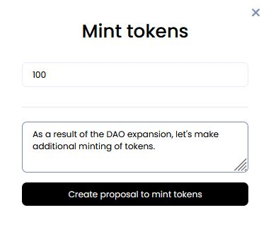
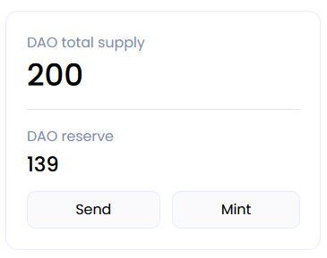
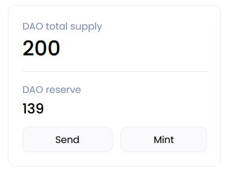
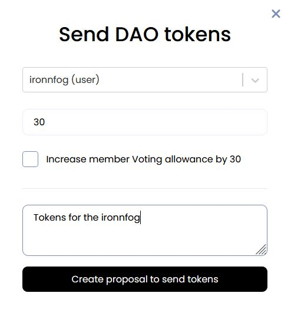
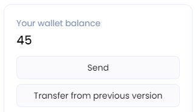
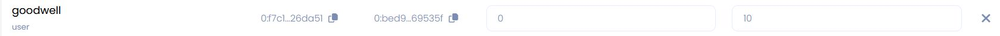

Working with tokens and Karma
Additional minting of tokens for DAO
Warning
The option allowing the minting of DAO tokens must be enabled on the Settings tab in the Token Settings section.
Click on the Mint button on the right on the Overview tab in the DAO Reserve section. You will create an proposal to mint additional tokens for this DAO.
In the window that appears, enter the amount of tokens to emission and add a description of the DAO members. Then click Create proposal to mint tokens

After creating the proposal, you will be redirected to the DAO tab with events.

Inside the event, you can get details of proposal.

After the proposal is accepted, the changes will take effect.

Additional voiting tokens and Karma
Any member of the DAO can send a request to change Karma.
To do this, go to the Members tab and change the number of Karma and token balance of one or more DAO members, including for yourself.
Warning
To create an proposal, you must have at least 20 tokens on your wallet balance.

Warning
Be careful when distributing karma among the members of the DAO.
Avoid the possibility of a preponderance in the votes of one of the DAO members.
To avoid a situation where one participant will be able to transfer the entire balance of the DAO to his wallet.
Then click Save changes and create proposal.
As a result, a Multi proposal will be created and you will be redirected to the event tab Dao.

Inside the event, you can get details of Multi proposal.

After accepting the multi proposal, the user will receive tokens and Karma from DAO reserve. This can be seen on the Members tab.

Expert Tags
You can now add an Karma Tags to your DAO, which will grant additional Karma Voting Powers to each member possessing such Tags for decisions that support Karma Tags.
Transfer of tokens from DAO reserve
Tokens can be sent from the DAO reserve to
- a member of this DAO;
- any GOSH user, who has visited this DAO at least once.
To do this, on the Overview tab in the DAO reserve section, click Send.

In the window that opens, enter the name of the GOSH user or the name of the DAO and the amount of tokens to send.
If you want the recipient's Karma to increase jointly with the token balance, then check this box.
Also write a description for the token transfer. This will help the DAO members to make a decision when voting.
Warning
Be careful when distributing karma among the members of the DAO.
Avoid the possibility of a preponderance in the votes of one of the DAO members.
To avoid a situation where one participant will be able to transfer the entire balance of the DAO to his wallet.
Then click Create proposal to send tokens

After creating the offer, you will be redirected to the DAO page with events.

Inside the event, you can see detailed information about the proposal.

After the proposal is accepted, the tokens will be transferred to the balance wallet of the GOSH user or DAO.
Transfer of tokens from user's wallet
Tokens can be sent from the DAO reserve to
- a member of this DAO;
- any GOSH user, who has visited this DAO at least once.
Info
Only regular tokens are transferred. You will not be able to vote with such tokens.
To send tokens from your wallet to the DAO, go to the Overview or DAO tab on the Your wallet balance section and click Send.

In the window that opens, enter the name of the member of the DAO and the amount of tokens to send. Then click Send tokens

After that, the tokens will be transferred to the recipient's wallet balance.
